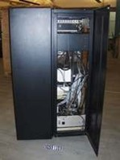

Komputer adalah sebuah perangkat elektronik yang dapat menerima, memproses, dan menyimpan data untuk menghasilkan informasi yang berguna. Komputer terdiri dari berbagai komponen yang bekerja bersama-sama untuk menjalankan
tugas-tugas yang diberikan kepadanya.
Gambar 4.2 Diagram Blok Konseptual Komputer Sumber: Dokumen Kemendikbud,2021
Gambaran umum sebuah komputer tampak pada Gambar 4.2, di mana “data” (teks, suara, klik, sentuhan, atau lainnya) dari peranti masukan akan diproses oleh Central Processing Unit (CPU) untuk menghasilkan output berupa tampilan
informasi, sinyal reaksi, dll. yang direpresentasikan melalui peranti keluaran.
1. Sistem komputer
Sistem komputer terdiri dari tiga komponen utama: perangkat keras (hardware), perangkat lunak (software), dan pengguna. Mari kita bahas lebih detail tentang setiap komponen ini :
Perangkat Keras (Hardware): Komponen perangkat keras meliputi semua komponen fisik yang membentuk sistem komputer. Ini termasuk unit pemroses sentral (CPU), memori (RAM), penyimpanan (hard disk, SSD), papan
induk (motherboard), kartu grafis, monitor, keyboard, mouse, dan perangkat keras lainnya. Perangkat keras bertanggung jawab untuk menjalankan tugas fisik dalam sistem komputer.
Perangkat Lunak (Software): Komponen perangkat lunak mencakup program-program yang dijalankan oleh sistem komputer. Perangkat lunak meliputi sistem operasi (seperti Windows, macOS, Linux), aplikasi (seperti
Microsoft Word, Adobe Photoshop), perangkat lunak pengontrol perangkat keras (seperti driver), dan perangkat lunak kustom yang dikembangkan untuk keperluan khusus. Perangkat lunak memberikan instruksi kepada perangkat keras
dan memungkinkan pengguna untuk menjalankan berbagai tugas dan aplikasi.
Pengguna: Pengguna adalah individu atau entitas yang berinteraksi dengan sistem komputer. Pengguna menggunakan perangkat keras dan perangkat lunak untuk menjalankan aplikasi, mengakses data, dan melakukan
tugas komputasi lainnya. Pengguna berinteraksi dengan sistem komputer melalui antarmuka pengguna, seperti layar, keyboard, dan mouse, serta melalui perintah dan input yang diberikan kepada sistem.
2. Jenis-Jenis Komputer
Berdasarkan ukurannya, komputer dibagi menjadi beberapa jenis antara lain seperti ditunjukkan pada penjelasan berikut.
Microcomputer (Komputer Mikro): Komputer mikro adalah jenis komputer dengan ukuran paling kecil di antara jenis komputer lainnya, menggunakan microprocessor sebagai CPU utama, dan banyak digunakan dalam
kehidupan sehari-hari karena ukuran kecil dan harga yang terjangkau. Contohnya meliputi Ultrabook, permainan konsol, telepon pintar, dan tablet. Bahkan, ada komputer mikro dalam bentuk papan tunggal (single board circuit, SBC)
seperti Raspberry Pi dan Arduino.
Gambar 4.3 Contoh Microcomputer
Raspberry Pi adalah SBC seukuran kartu kredit yang dapat digunakan untuk menjalankan berbagai program, termasuk aplikasi perkantoran, permainan komputer, dan pemutar media hingga video beresolusi tinggi. Raspberry Pi
dikembangkan oleh Raspberry Pi Foundation, sebuah yayasan nirlaba yang dipimpin oleh pengembang dan ahli komputer dari Universitas Cambridge, Inggris.
Arduino, di sisi lain, adalah platform elektronik open-source yang memungkinkan pembuatan proyek interaktif. Papan Arduino dapat membaca input dan menghasilkan sinyal output untuk mengendalikan berbagai perangkat seperti
motor, LED, dan lainnya. Arduino mudah diprogram dan tersedia dalam berbagai varian, mulai dari yang sederhana hingga yang kompleks, untuk berbagai aplikasi seperti IoT, perangkat yang dapat dikenakan, pencetakan 3D, dan
sistem tertanam.
Komputer Personal (PC, Personal Computer): Komputer personal (PC) lebih besar dari komputer mikro, memiliki kapasitas penyimpanan dan pemrosesan data yang lebih besar, serta dirancang untuk penggunaan
personal. PC dapat berbentuk desktop yang diletakkan di meja atau laptop yang dapat dibawa ke mana-mana.
Gambar 4.4 Contoh Personal Computer
Mini PC: Merupakan komputer “peralihan” dari komputer personal ke komputer mini yang dipakai di industri. Biasanya, dipakai untuk industri kecil atau personal untuk keperluan profesional atau industri kecil.
Gambar 4.5 Contoh Mini PC, Coffee Lake-U-based Bean Canyon Intel NUC8i5BEK2
Minicomputer: Berbeda dengan komputer personal, komputer mini berukuran lebih besar, dan mempunyai kapasitas memori maupun pemroses yang lebih besar. Komputer mini dipakai menunjang kebutuhan pengolahan
informasi perusahaan skala menengah. Saat ini, komputer mini kurang populer dan makin sedikit digunakan karena perusahaan lebih praktis untuk menyewa komputer di cloud yang memudahkan pemeliharaannya

Gambar 4.6 Contoh Minicomputer PDP-8e Minicomputer System
Komputer Mainframe: Komputer Mainframe berukuran lebih besar dibandingkan dengan komputer dan biasanya digunakan oleh perusahaan-perusahaan besar sebagai server (peladen)
Gambar 4.7 Salah satu contoh Komputer Mainframe IBM z Systems z13.
Supercomputer: Superkomputer adalah jenis komputer terbesar dengan kemampuan pengolahan data dan kinerja terkuat. Mereka mampu melakukan triliunan instruksi per detik yang diukur dalam FLOPS (Floating Point
Operation per Second). Superkomputer digunakan oleh perusahaan dan organisasi besar seperti NASA untuk aplikasi seperti peluncuran dan pengendalian pesawat dan roket.
Gambar 4.8 Sierra/ATS-2 Super Computer
B. Interaksi Manusia dan Komputer
Sebuah sistem komputasi terdiri atas perangkat keras dan perangkat lunak yang saling berinteraksi. Interaksi antarmuka seringkali digunakan untuk menghubungkan perangkat satu dengan perangkat lainnya, mulai dari perangkat masukan
dan keluaran yang dikendalikan oleh sistem operasi, dan kemudian dapat ditambahkan berbagai aplikasi yang dapat dipakai oleh pengguna.
Berbagai macam jenis interaksi dapat dilakukan oleh pengguna dengan sistem komputer, di antaranya seperti berikut.
1. Berbasis GUI (Graphical User Interface)
Merupakan antarmuka yang menggunakan menu grais untuk memudahkan pengguna berinteraksi dengan komputer. GUI merupakan antarmuka pada sistem operasi komputer yang menggunakan menu grais. Pengguna berinteraksi melalui ikon, menu,
dialog dengan button dan text box, radio button (untuk satu pilihan), atau checkbox (untuk banyak Pilihan).
Gambar 4.10 Antarmuka Berbasis Grais (a) Ikon pada ponsel, (b) Menu, (c) Dialog, textbox, dan button, (d) checkbox dan radio button Sumber: Dokumen Kemendikbud, 2021
2. Antarmuka Berbasis Perintah (Command Line Interface/CLI)
Sistem operasi berbasis CLI merupakan tipe antarmuka melalui text-terminal. Pengguna menjalankan perintah dan program di sistem operasi tersebut dengan cara mengetikkan baris-baris tertentu.
Gambar 4.11 Contoh Antarmuka Berbasis Perintah (CLI) Sumber: Dokumen Kemendikbud, 2021
3. Melalui Suara (Audio)
Antarmuka menggunakan suara memungkinkan pengguna mengucapkan sesuatu dan hasilnya akan direkam, dalam bentuk format audio. Antarmuka ini hanya dimungkinkan jika perangkat keras menyediakan perekam suara dan melalui aplikasi.
4. Melalui Gambar (Video)
Antarmuka menggunakan gambar hanya dimungkinkan jika perangkat keras menyediakan kamera. Kamera akan merekam gambar dan melalui aplikasi akan menyimpan gambar dalam format video.
5. Melalui Berbagai Piranti Masukan Lainnya
Selain melalui perangkat lunak, pengguna dapat berinteraksi langsung ke komputer melalui piranti masukan, seperti yang dijelaskan sebelumnya (keyboard, joystick, mouse, touchpad, layar sentuh, keyboard virtual, dll).
C. Kolaborasi dalam Sistem Komputer
Dalam sebuah sistem komputer, perangkat keras bekerja sama dengan perangkat lunak aplikasi dan sistem operasi. Sistem operasi berinteraksi dengan aplikasi untuk berkomunikasi dengan pengguna, membentuk sistem komputasi yang
bermanfaat. Ini mirip dengan bagaimana organ tubuh bekerja dalam tubuh manusia yang diatur oleh sistem syaraf, dengan indera memberikan sinyal untuk tindakan. Konsep ini juga mendasari penciptaan robot yang dapat berperilaku
sesuai dengan program yang ada dalam mereka.
Sistem otonom melibatkan interaksi komputasi tidak hanya dengan manusia tetapi juga dengan lingkungan sekitarnya, seperti perekam gambar, suara, dan sinyal lain yang mengirimkan data untuk diproses. Ini adalah dasar dari Internet
of Things (IoT), di mana perangkat di sekitar manusia mengumpulkan dan mengirim data ke komputer. Dalam komputer, komponen saling berhubungan, dan komputer berkolaborasi melalui jaringan, mulai dari jaringan lokal hingga internet
global. Ini adalah kerangka kerja kolaborasi yang terjadi dalam sistem komputasi.
Dalam sistem komputer, terjadi interaksi dan kolaborasi antara perangkat lunak. Contohnya terlihat dalam penggunaan berbagai perangkat lunak dalam kehidupan sehari-hari seperti di toko, warnet, kantor, dan rumah sakit. Misalnya,
saat menginstal perangkat lunak penggajian di komputer kantor, data masih perlu diolah dengan aplikasi pengolah lembar kerja. Ketika membeli laptop baru dan ingin membuat laporan, perlu menginstal sistem operasi terlebih dahulu
sebelum aplikasi pengolah kata. Ini menunjukkan bahwa perangkat lunak saling bergantung dan bekerja sama dalam sistem komputer.
Gambar 4.12 Valkyrie, Humanoid Buatan NASA Sumber: Dokumen Kemendikbud, 2021
Interaksi antar perangkat keras terjadi saat perangkat keras berkomunikasi satu sama lain. Contoh mencakup mencolokkan perangkat keras seperti flash disk atau mouse ke komputer. Saat menggunakan webcam untuk mengambil foto yang
kemudian dicetak dengan printer, interaksi antar perangkat keras terjadi ketika webcam mengirim gambar ke komputer, dan gambar tersebut dibuka oleh aplikasi lain sebelum dicetak dengan printer. Dalam kasus ini, interaksi antar
perangkat keras melibatkan perantara perangkat lunak yang dijalankan oleh sistem operasi pada komputer.
Interaksi antara antarmuka hardware dan software melibatkan langkah-langkah yang lebih kompleks karena perangkat lunak harus dirancang untuk dapat berkomunikasi dengan perangkat keras. Misalnya, sebelum menggunakan printer,
pengguna perlu menginstal driver, sebuah program yang memungkinkan komputer mengenali printer tersebut. Driver berperan sebagai perangkat komunikasi antara sistem operasi dan perangkat keras, menggunakan kode biner untuk
mengendalikan hardware dan mengambil data yang dikirim oleh hardware.
Selanjutnya, sistem operasi menyampaikan data ke printer untuk mencetak dokumen. Dalam proses ini, software yang diinstal, komputer atau laptop sebagai hardware, dan pengguna terlibat dalam sebuah hubungan yang memerlukan
antarmuka agar semuanya dapat berfungsi bersama.
Gambar flasdisk dan mouse
Contoh lainnya ialah ketika akan bermain musik. Kita dapat menggunakan alat tambahan menyerupai lashdisk (Makey Makey, misalnya pada modul https:// brainsintheclouds.eu/?page_id=159) yang dapat ditancapkan ke komputer, kemudian
dengan sebuah kabel, dapat disambungkan ke pisang, wortel, jeruk, alumunium, dan sebagainya. Untuk memainkannya, dapat membuka situs web atau aplikasi tertentu, lalu menyentuh barang yang disambungkan dengan kabel, dan musik pun
dapat dimainkan. Ketika akan bermain aplikasi permainan menggunakan ponsel, pasti membutuhkan software aplikasi permainan tersebut sehingga terjadi interaksi antarmuka antara ponsel sebagai hardware dan software aplikasi
permainan.
Bagus, mulai kerjakan quiz untuk memperdalam pengetahuan kamu